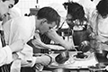
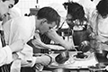

想知道如何由外觀判斷廚具的品質、如何保養、減少磨損與耐用嗎?
長期致力於環境相關資訊報導的台灣環境資訊協會，特別邀請廚神高登先生，帶領團隊到萬象廚具、傳統工廠、台北尖端科技, 介紹廚具挑選須知, 教導大家如何選購能夠兼顧環境、也兼顧造型與人體工學的設備, 歡迎有興趣朋友觀賞。
節目直播時間: 2018/06/15 晚間 20:00-21:00
節目直播網址: 廚具中心粉絲團 https://www.facebook.com/WMF-Taiwan-1022390754522365/